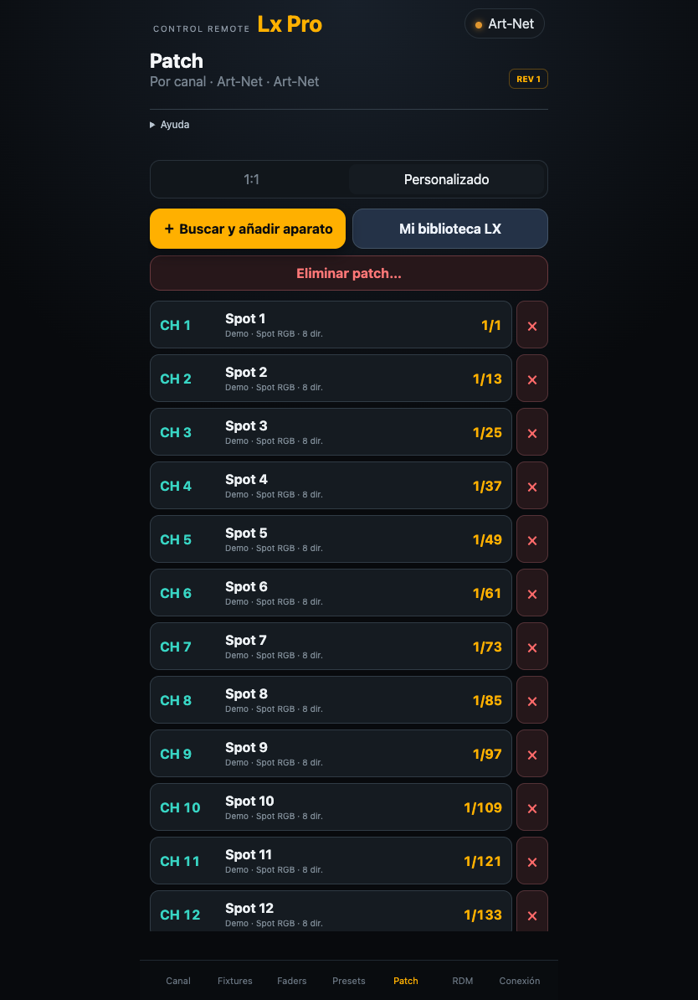
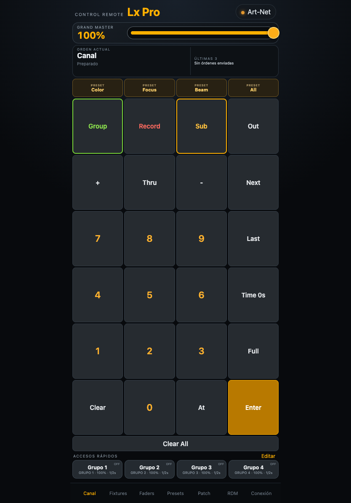
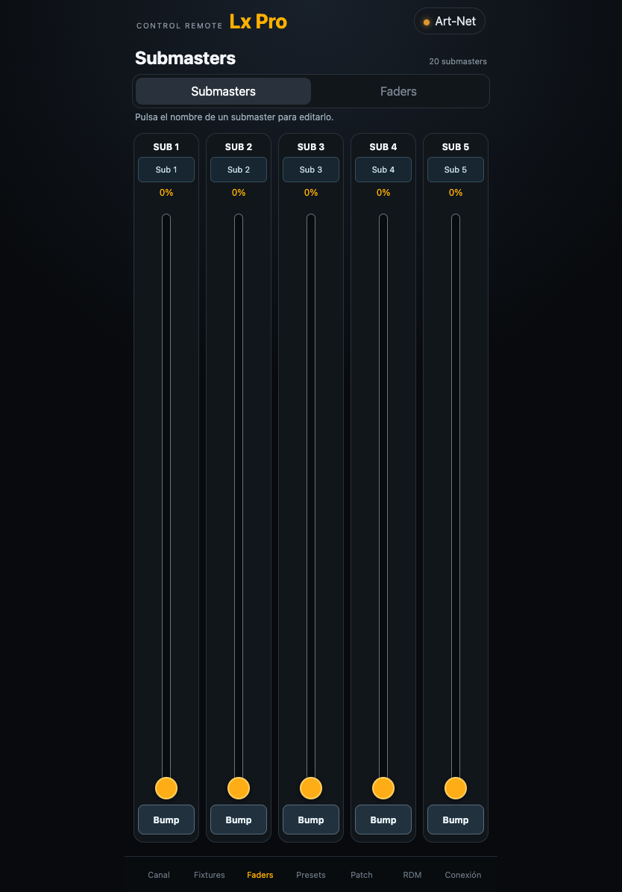
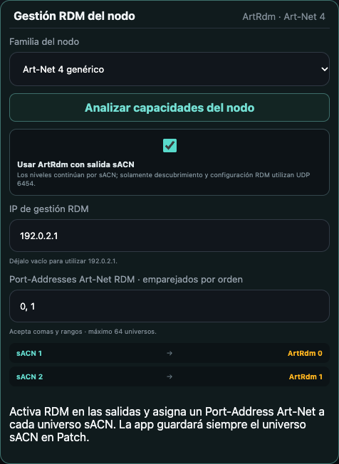
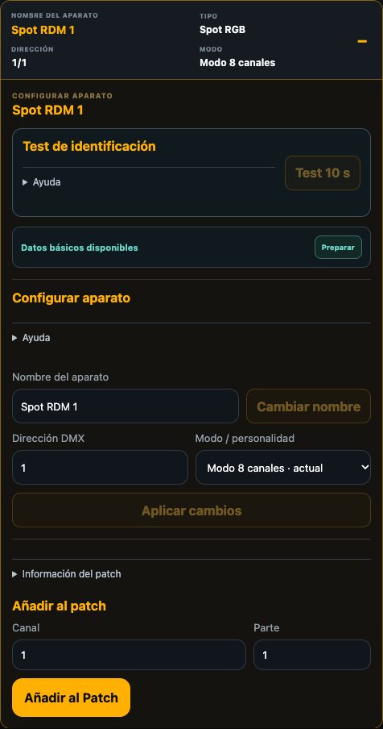

Configurar la conexión
- Conecta el dispositivo a la red del nodo y permite el acceso a la red local.
- Abre Conexión → Básico, elige o crea un perfil y selecciona sACN · E1.31.
- En Modo de envío selecciona Unicast · a la IP del nodo para enviar a un receptor concreto e introduce su IP. Para multicast selecciona Multicast · por universo y configura esos mismos universos en los receptores.
- En Avanzado → Salida sACN E1.31, indica los Universos activos · 1 a 63999. Toca fuera del campo o pulsa Enter para guardar. Revisa el destino calculado. El envío multicast utiliza UDP 5568.
- Para gestionar RDM, configura además la IP individual del nodo y sigue el capítulo RDM de este manual.
Comprobar configuración sACN permite revisar el estado de la conexión. Una fuente sACN detectada en la red puede ser distinta del nodo receptor que necesitas configurar.
El indicador puede permanecer ámbar en multicast o cuando el nodo no responde a ArtPoll. Comprueba la recepción en el nodo y la respuesta del aparato al modificar el nivel.
Un universo contiene 512 direcciones DMX. Un canal de Pro L identifica el aparato que seleccionas. El Patch relaciona ese canal con el universo, la primera dirección y el modo del aparato.
Comprobar la primera salida
- Usa un dimmer con una dirección conocida. Selecciona Patch → 1:1.
- Consulta Direccionamiento para identificar el canal que corresponde a su universo y dirección.
- Desde Canal aplica un nivel bajo, comprueba la salida y devuelve el canal a cero.
- Si no responde, compara el universo, la dirección y el modo del aparato con la configuración del nodo.
Preparar el Patch y la biblioteca
En 1:1 cada canal controla una dirección. Con varios universos activos, consulta Direccionamiento para ver qué bloque de canales corresponde a cada universo. Cambiar a 1:1 conserva el patch personalizado.
- Para un móvil o un aparato con varios parámetros, selecciona Personalizado. Comprueba en el aparato su modo DMX y dirección inicial.
- Abre Mi biblioteca LX. Puedes crear una personalidad con los parámetros y offsets del manual del aparato, o importar un archivo local GDTF o .lxfixture. Revisa la declaración de derechos al importar. La edición comercial parte de una biblioteca local vacía.
- En Buscar y añadir aparato selecciona el modo exacto. Indica canal, universo, dirección inicial y cantidad. En Opciones avanzadas puedes ajustar la parte y la etiqueta. Pulsa Guardar.
- Comprueba el espacio ocupado. Un modo de 12 direcciones que empieza en 101 usa 101–112. El siguiente aparato cabe a partir de 113. Toca una fila para corregirla o usa su control de despatch para retirarla.
Duplica una personalidad en uso si necesitas otra variante. Exporta las personalidades propias como .lxfixture desde la biblioteca para reutilizarlas.

Dar nivel, temporizar y grabar grupos
Para este protocolo, para llevar los canales 1 a 4 al 50 %, introduce 1 → Thru → 4 → @ → 5 → 0 → Enter. Usa + o − para añadir o excluir canales. Full aplica el máximo y Out lleva la selección a cero.
Para hacer un fundido, pulsa Time, introduce los segundos y elige Aplicar Time antes de cambiar el nivel. Admite 0–999 segundos y decimales. El tiempo sigue activo durante la sesión. Vuelve a 0 para recuperar la respuesta inmediata.
Para guardar un grupo, introduce 1 → Thru → 4 → Record → Group → 1 → Enter. Recupéralo con Group → 1 → Enter. Si hay un acceso rápido libre, la app lo asocia al grupo. Vaciar ese acceso conserva la memoria. Revisa su nivel y los tiempos de entrada y salida antes de activarlo.
En salida DMX, Clear All cancela los fundidos pendientes.

Ajustar los parámetros del aparato
- Abre Fixtures y selecciona un aparato del patch. Ajusta Intensidad. Si aparecen únicamente niveles básicos, comprueba el modo y la personalidad elegidos.
- En DMX directo, para un aparato con Pan y Tilt, toca o arrastra la cuadrícula XY. La derecha aumenta Pan y arriba aumenta Tilt. Abrir el panel coloca el cursor en el centro sin mover el aparato. Centrar aparato sí envía movimiento. Liberar posición retira ambos ajustes manuales.
- En Color, usa Picker para mezclar RGB o CMY, Emisores para ajustar componentes como blanco o ámbar, y Ruedas para elegir colores físicos. Un nuevo color del picker apaga los emisores adicionales. Ajusta esos emisores después de elegir el color.
- Explora el resto de parámetros disponibles en el modo seleccionado, como zoom o recorte.
Operar faders y submasters
Abre Faders y elige la vista de canales o submasters. Localiza la tira por su número y desliza el fader mientras compruebas la salida. En Submasters, toca el nombre para editar su etiqueta. Mantén Bump para una pulsación momentánea y suéltalo para terminarla.

Grabar y aplicar presets
Los presets se comparten entre Art-Net y sACN. Cada memoria aplica los parámetros de su sección a las personalidades LX compatibles.
- Selecciona fixtures con personalidad LX y ajusta los parámetros que quieras recuperar.
- Abre Presets, elige la familia de parámetros o All Preset y pulsa Grabar / editar. Comprueba la selección que muestra el panel.
- Introduce número y nombre y pulsa Grabar preset. Para sustituir una memoria existente, selecciona su número y pulsa Actualizar valores. Para cambiar solo la etiqueta, usa Guardar nombre.
- Sal de edición, selecciona aparatos compatibles y toca la memoria para aplicarla. Puedes asociar un All Preset grabado a un acceso rápido.
Preparar y configurar RDM
La gestión RDM de este perfil utiliza ArtRdm por UDP 6454.
Preparar el nodo y los aparatos
- Conecta el dispositivo con Pro L y el nodo a una red en la que puedan comunicarse por IP. En iOS permite el acceso a la red local.
- En la configuración del nodo, habilita la salida DMX y RDM en el puerto conectado a los aparatos. Consulta el manual del modelo para localizar esas opciones.
- Comprueba que los aparatos admiten RDM y que RDM está habilitado si ofrecen ese ajuste. Los splitters de la línea también deben permitir el retorno RDM.
- Anota la IP del nodo, el puerto físico y el universo que recibe ese puerto. Para usar sACN con ArtRdm, anota también el Port-Address Art-Net asignado a la gestión RDM de ese mismo puerto.
Configurar la ruta de gestión
- En Conexión → Básico, selecciona sACN · E1.31. Elige unicast o multicast y configura el receptor. En multicast, introduce también la IP individual del nodo para poder gestionarlo.
- En Avanzado → Salida sACN E1.31, configura los Universos activos · 1 a 63999 que escucha el nodo. Toca fuera del campo o pulsa Enter para guardar la lista.
- En Gestión RDM del nodo, selecciona Familia del nodo o pulsa Analizar capacidades del nodo. El análisis consulta la respuesta ArtPoll del nodo. Si no responde, revisa su configuración y selecciona la familia que corresponda a su modelo.
- Si el nodo admite ArtRdm junto con salida sACN, activa Usar ArtRdm con salida sACN. Comprueba que el propio nodo permite esa combinación y tiene RDM habilitado en sus salidas.
- En IP de gestión RDM, escribe la IP individual del nodo. Si dejas el campo vacío, Pro L utiliza la IP principal del perfil. Esa IP debe estar disponible también cuando los niveles sACN se envían por multicast.
- En Port-Addresses Art-Net RDM · emparejados por orden, introduce los Port-Addresses RDM del nodo en el orden de los universos sACN mostrados. Toca fuera del campo o pulsa Enter para guardar y comprueba cada pareja en la vista previa.
- Abre RDM → Buscar equipos RDM. Al vincular un aparato, Pro L guarda en Patch el universo sACN correspondiente a su ruta.
Ejemplo con dos puertos. Supongamos que el nodo recibe sACN 1 y 2, y sus puertos usan ArtRdm 0 y 1 respectivamente. En Universos activos escribe 1, 2. En Port-Addresses Art-Net RDM escribe 0, 1. La vista previa debe mostrar estas parejas.
| Puerto físico del ejemplo | Universo sACN | Port-Address ArtRdm | Universo guardado en Patch |
|---|---|---|---|
| 1 | 1 | 0 | 1 |
| 2 | 2 | 1 | 2 |
El emparejamiento depende de la configuración del nodo. Comprueba la correspondencia con cada puerto físico antes de cambiar direcciones o modos. La propuesta inicial de Pro L puede necesitar ajustes.

Nodos que requieren RDMnet E1.33
Cuando Pro L identifica un nodo cuyo transporte de gestión es RDMnet, muestra el aviso Nodo RDMnet detectado. La gestión mediante controlador y broker RDMnet está pendiente de implementación en esta versión. La búsqueda y edición RDM de este panel requieren una ruta ArtRdm compatible. Para equipos que requieren RDMnet, utiliza su herramienta de gestión compatible para configurar los aparatos.
Buscar, identificar y vincular aparatos
- Pulsa Buscar equipos RDM y espera el resultado. Usa el filtro En línea para ver los aparatos que han respondido en la búsqueda. Solo caché muestra los guardados de consultas anteriores.
- Abre la fila del aparato y consulta su UID, nombre, dirección y modo. En Test de identificación, pulsa Test 10 s para localizarlo físicamente. Puedes terminar antes con Detener test.
- Si el panel muestra únicamente los datos básicos, pulsa Preparar para solicitar los modos y controles que comunique el aparato. Usa Actualizar para volver a leerlos.
- Para modificar el equipo, introduce Dirección DMX, elige Modo / personalidad y pulsa Aplicar cambios. Esos cambios actúan sobre el aparato. Espera el mensaje de confirmación y comprueba los valores devueltos.
- Comprueba que el modo cabe en el universo. Por ejemplo, un modo de 12 direcciones que empieza en 101 ocupa 101–112. El siguiente aparato debe tener un rango libre.
- Para editar la etiqueta, escribe Nombre del aparato y pulsa Cambiar nombre. El equipo debe admitir esa operación.
- En Añadir al patch, introduce el canal y la parte y pulsa Añadir al Patch. Si ya existe un vínculo para ese UID, usa Actualizar vínculo. Revisa el resultado en Ver en Patch.
La vinculación crea la relación local entre canal y aparato utilizando los datos que devuelve RDM. Si faltan parámetros o slots, completa la personalidad en Patch para disponer de los controles necesarios en Fixtures. Si una operación falla y Pro L pide volver a leer el aparato, actualiza sus datos antes de continuar.

Resolver problemas de RDM
- Buscar equipos RDM está deshabilitado.
- Revisa Gestión RDM del nodo, la activación de ArtRdm, la IP de gestión y los Port-Addresses. Si aparece el aviso RDMnet, consulta el apartado de RDMnet de este manual.
- Los niveles funcionan, pero la búsqueda RDM no encuentra aparatos.
- Comprueba RDM en la salida del nodo, la compatibilidad del aparato y el retorno a través de la línea DMX y los splitters. Revisa el Port-Address de gestión y si el nodo acepta ArtRdm mientras recibe sACN. Después ejecuta Búsqueda profunda.
- El nodo no responde al análisis.
- Revisa la IP y que Art-Net esté habilitado para la gestión en el nodo. Un nodo sACN puede recibir niveles sin responder a ArtPoll. Selecciona su familia según las capacidades documentadas del equipo.
- El aparato aparece en el universo equivocado.
- Comprueba el orden de las parejas en Gestión RDM del nodo y su correspondencia con los puertos físicos.
- La lista muestra equipos que ya están desconectados.
- Selecciona En línea tras una búsqueda nueva. Los datos guardados siguen disponibles en Solo caché. Borrar caché elimina ese inventario guardado.
- Un cambio de dirección o modo se rechaza.
- Lee el mensaje de Pro L, comprueba que el rango cabe hasta la dirección 512 y que no se solapa con otro aparato del Patch. Vuelve a leer los datos del equipo y verifica que el modelo permite la escritura solicitada.
Resolver problemas de salida
Estado de la conexión
En Conexión despliega Colores del indicador de conexión. Verde significa que el equipo respondió a la comprobación. Ámbar indica que su presencia sigue sin confirmar. Rojo indica configuración incompleta, red no disponible o un error de conexión o envío. Comprueba la recepción en el equipo y la respuesta del aparato al operar los controles.
- El nodo recibe datos pero el aparato equivocado se mueve.
- Compara universo, puerto físico, dirección inicial y modo del aparato con la fila de Patch. Si intensidad mueve otro atributo, verifica los offsets de la personalidad.
- El color es correcto pero apenas hay luz.
- Revisa la intensidad, el obturador si existe y los maestros que afectan a ese aparato. Color e intensidad tienen controles independientes.
Si falta un parámetro, revisa la personalidad y el modo del aparato. La cuadrícula XY requiere seleccionar un solo fixture con Pan y Tilt.